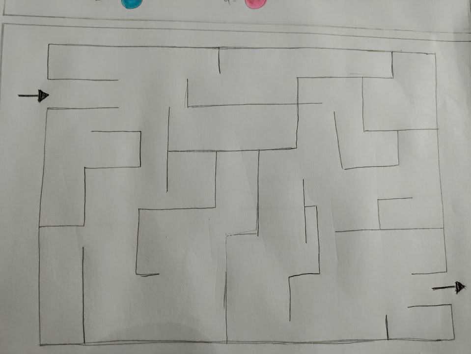

INITIAL SKETCHES
Click on each image to read the description!




Our primary goal for this project was to design and implement an engaging interactive application tailored specifically for young children. In pursuit of this objective, we designed a unique variation of the classic hide and seek game, adding an exciting twist to the traditional format of the game. Our application not only serves as a source of endless amusement, but it also allows children to enhance their cognitive skills, problem-solving abilities, and social interactions. We firmly believe that our application fosters both enjoyment and learning in a single, captivating experience.
The game begins with one player taking on the role of the game creator, who establishes the game group and sets the game's duration, signaling when it will conclude. Players joining the game are prompted to enter their names and are assigned unique avatars. The game then randomly designates one player as the seeker. Once the setup is complete, the game creator initiates the game. Hiders accumulate points as long as they remain uncaught by the seeker. When a seeker successfully finds a hider, they can click on the hider's avatar on their device, marking them as captured, and the hider's avatar disappears from everyone's screens. Throughout the game, seekers have the option to request hints about a hider's location, at the cost of losing some of their score. These hints last for only a few seconds and mimic the classic "hot and cold" tag, with the screen displaying "hot" as the seeker approaches the hider and "cold" as they move away. Additionally, hiders can taunt the seeker to gain more points by triggering a loud noise on their device, potentially revealing their position. If all the hiders are discovered, the seeker is declared as the winner. However, if the game timer expires before all hiders are found or the seeker gives up, the hiders that haven’t been caught are announced as the winners. When the game ends, a leaderboard showcasing the players’ scores is displayed.
Each team member was asked to sketch out 10 ideas that they believe could be suitable for an innovative and engaging application.
After agreeing that the “Hide ‘n Heat” idea had the most prospect for innovation and success, each team member created 10 refined sketches that matched their vision of the game. We then discussed all the designs, and decided on the game layout and the feasible features that could be implemented given our short timeline.
What sets this hide and seek game apart and makes it truly special for kids is the seamless fusion of technology, strategy, and excitement. Unlike traditional hide and seek, this digital version engages young minds with avatars and a dynamic scoring system that adds an element of competition and strategy to the mix. Players cleverly choose when to use hints to outsmart the seeker or when to taunt to divert their attention. The "hot and cold" hint system not only adds a thrilling dimension but also encourages critical thinking and decision-making as players work to stay hidden. Moreover, the game's flexibility with set durations and the potential for hiders to emerge victorious if the seeker can't find them within the allotted time introduces an element of suspense and unpredictability. The leaderboard at the end creates a sense of accomplishment and encourages repeated play, as kids strive to improve their scores and master the game's intricate strategies. This innovative twist on a classic favorite combines technology, strategy, and fun in a way that will captivate young players and keep them coming back for more.
Our team's success in this project was the result of a coordinated effort, with each member playing a crucial role. When it came to sketching out our initial ideas, each team member prepared their own ideas, then we brainstormed, refined, and collaborated to bring our creative visions to life. Simon meticulously transformed our sketches into a function and engaging application whereas Katie took the lead in creating our impressive portfolio, showcasing our work beautifully. Hala and Nayera’s writing skills allowed the team to present informative write-ups that effectively communicated the essence of our project. For the demo, Simon, Hala and Katie brought the game to life with their enthusiasm and acting skills, and Nayera’a filming skills ensured a polished and professional end result. Together, we combined our strengths and talents to deliver an innovative and engaging application in a short period of time.


![The Lobby Screen: </br> Purpose: </br> A waiting area for participants before the game starts. Typically used in online games to gather all players before commencing. </br>
Features:
<ul>
<li> Seeker Select: Randomly selects a player to become the seeker, all other players become the hiders. </li>
<li> Start Game Button: Begins the game for all participants. </li>
<li> List of Participants: Displays names/icons of all players currently in the lobby. </li>
<li> Back Button: Allows user to go back to the choice screen. </li>
</ul>](./pictures/Lobby.png)